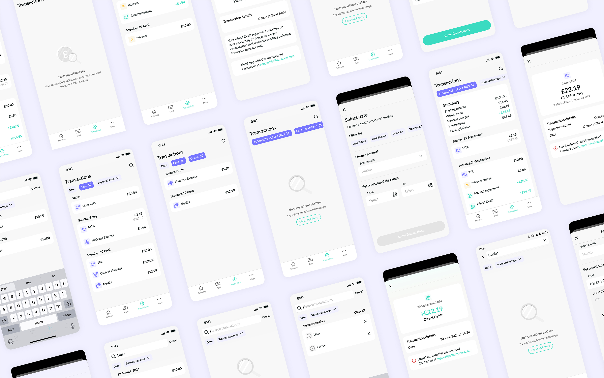
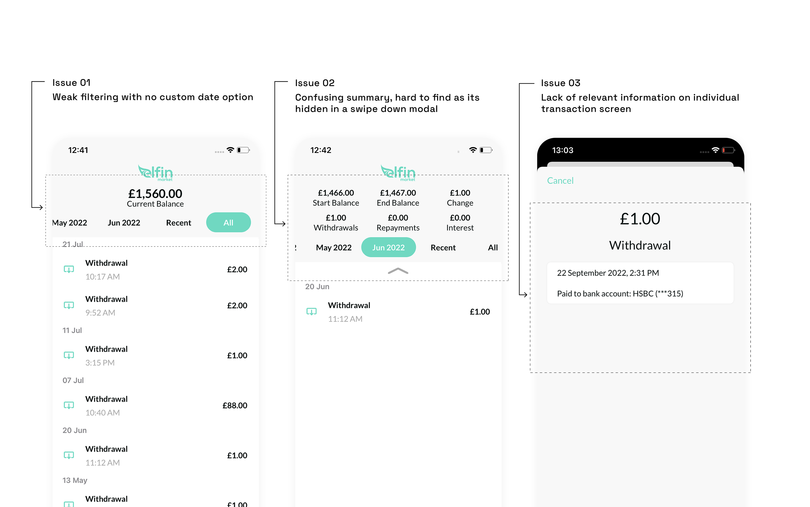
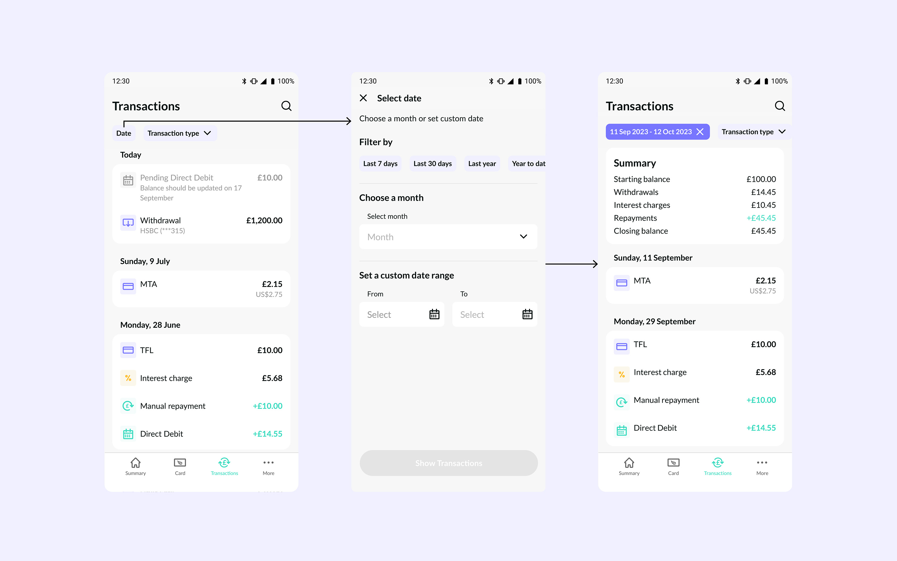
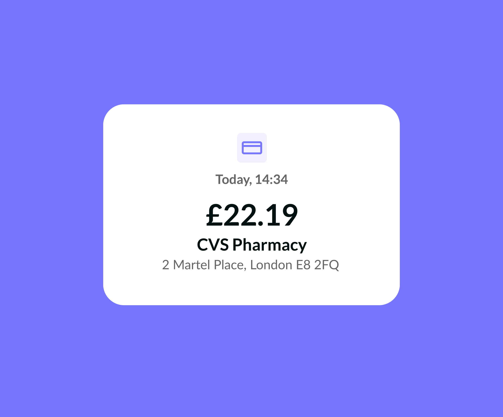
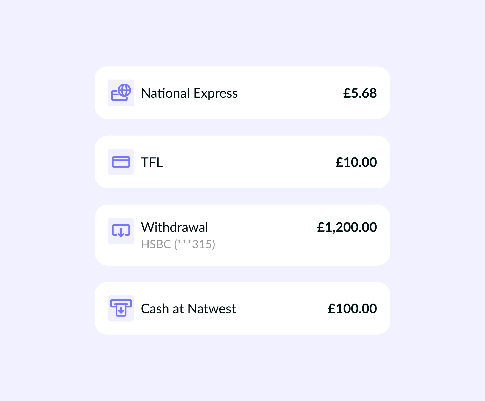
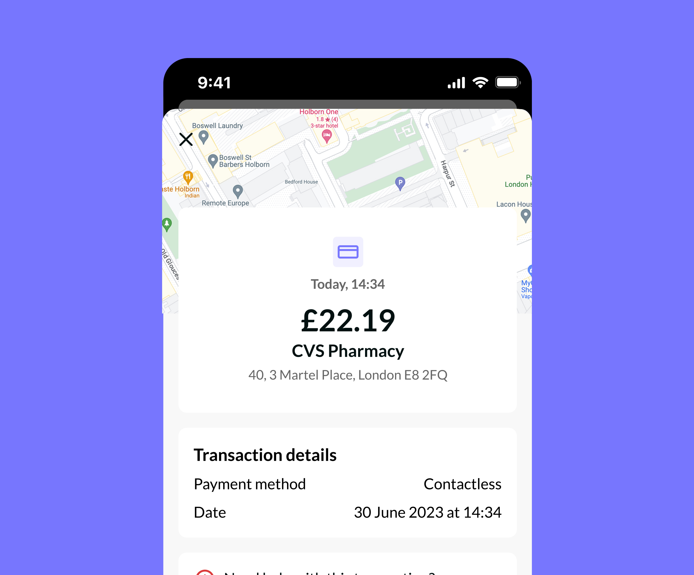
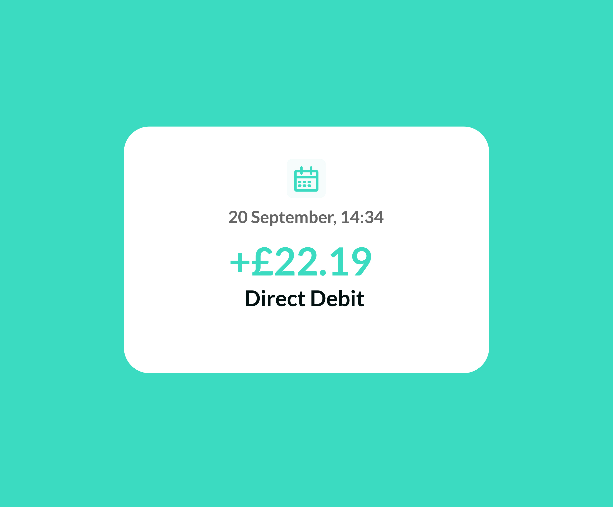
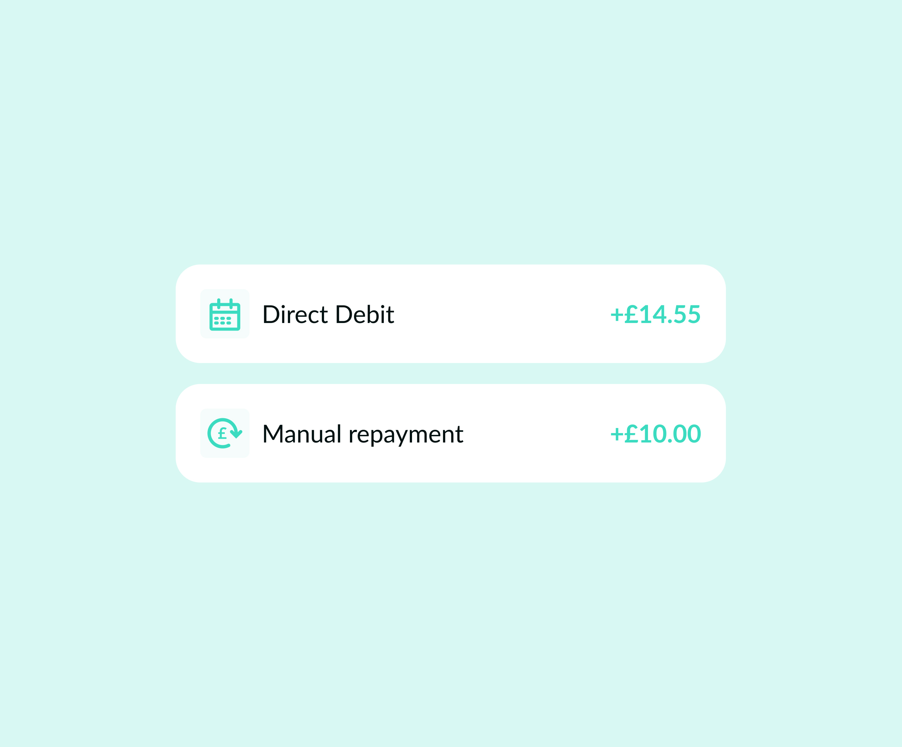
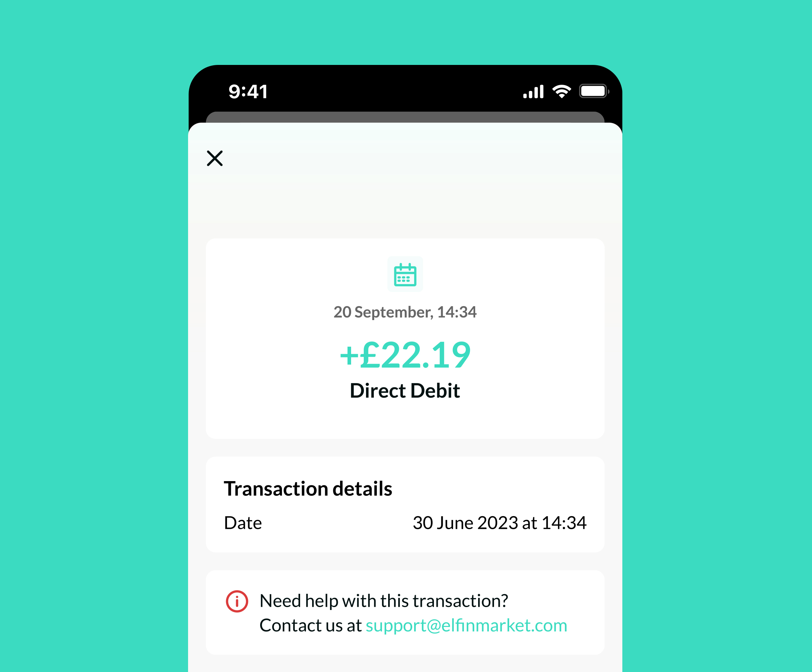

About
CONTEXT
Transaction tab is one of the core parts of the app, allowing borrowers keep on top of their spending and repayments. The MVP version was sufficient before physical payment card was released, but with increased number of transactions it became obvious it was lacking basic functionality.

PROBLEM
Users struggled to locate specific transactions or track their spending patterns due to the lack of relevant filters and search options
Confusing interactions and data display made transactions summary feature less helpful
Transactions displayed minimal details, making it difficult to quickly recognise a transaction

SOLUTION
Working closely with iOS and Android developers we used mostly existing Design System components to efficiently tackle these problems
02
Improved date filtering with custom date option and easy to select pre-set options added flexibility. A dynamic Summary component at the top of transactions gave users a clear overview of their financial activity

03
Redesigned individual transaction cards with color coding for income and expenses, improved readability, and added relevant metadata (location, payment method, contact link) to help users quickly verify and track their activity






IMPACT
This redesign has enabled borrowers to fully track their spending and repayments with visual cues, custom date filters and comprehensive summary